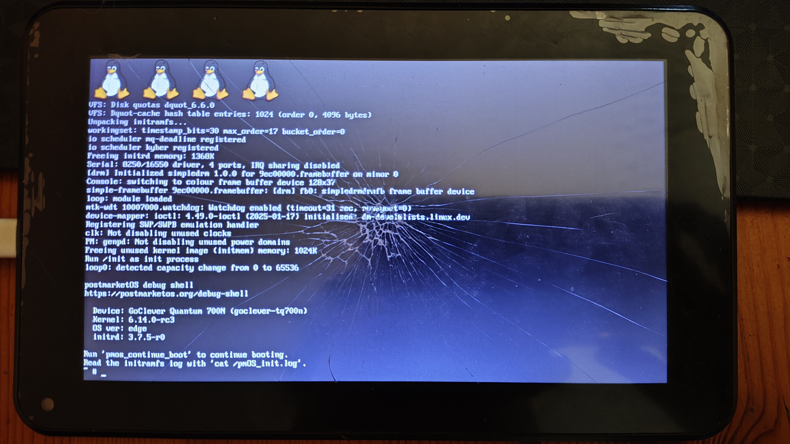

GoClever Quantum 700N (goclever-tq700n)
This means that it cannot be selected in pmbootstrap.
|
 GoClever Quantum 700N booting Linux 6.14 | |
| Manufacturer | GoClever |
|---|---|
| Name | Quantum 700N |
| Codename | goclever-tq700n |
| Model | TQ700N |
| Released | 2014 |
| Type | tablet |
| Hardware | |
| Chipset | MediaTek MT8127 |
| CPU | Quad-Core Cortex A7 1.3 GHz |
| GPU | Mali-450 MP4 |
| Display | 1024x600 TFT |
| Storage | 8 GB NAND |
| Memory | 512 MB |
| Architecture | armv7 |
| Software | |
| Original software | Android |
| Original version | 4.4.2 |
| FOSS bootloader | no |
| postmarketOS | |
| Category | testing |
| Pre-built images | no |
| Mainline | partial |
{kind=link}
| Flashing |
Broken
|
|---|---|
| USB Networking |
Broken
|
| Internal storage |
Broken
|
| SD card |
Broken
|
| Battery |
Broken
|
| Screen |
Broken
|
| Touchscreen |
Broken
|
| Multimedia | |
| 3D Acceleration |
Broken
|
| Audio |
Broken
|
| Camera |
Broken
|
| Connectivity | |
| WiFi |
Broken
|
| Bluetooth |
Broken
|
| GPS |
Broken
|
| Miscellaneous | |
| USB OTG |
Broken
|
| HDMI/DP |
Broken
|
| Sensors | |
| Accelerometer |
Broken
|
| Proximity |
Broken
|
| Primary Bootloader |
Works
|
|---|---|
| Secondary Bootloader |
Broken
|
| Mainline |
Broken
|
| Internal Storage |
Works
|
| SD card |
Broken
|
| USB Host |
Broken
|
| USB Peripheral |
Broken
|
| Display |
Works
|
| Buttons |
Broken
|
Contributors
Users owning this device
- Illen (Notes: Broken touchscreen)
How to enter flash mode
| WARNING: Leaving the device running fastboot or mainline kernel indefinitely will deplete its battery and brick it if it doesn't have a vendor boot image. |
Run mtkclient with mtk meta FASTBOOT command and connect the powered off device to host. Alternatively you can run adb reboot-bootloader when the device runs Android with USB debugging enabled. Unfortunately mtkclient cannot directly flash the device right now.
Installation
There is no support for NAND, SD or USB in mainline. All you can do right now is just flash the boot image with Linux kernel and pmOS ramdisk, and look at the simple-framebuffer output. It is recommended to back up the vendor boot image first, it can be done with adb pull /dev/block/mtdblock6 boot.img when running Android. The boot partition is only 8 MB, so it is recommended to split initramfs into extra package and use high compression for kernel and ramdisk. Before generating the boot image, you will need to prepend the MediaTek boot header to the kernel and ramdisk using mtk-mkimage from pmaports. Use KERNEL label for kernel and ROOTFS label for ramdisk.
Recovering a bricked device with weak battery and custom boot image
Fortunately it is not hard to recover a bricked device. Connect the device to host and run dmesg -w in terminal, you should see ttyACM0 device appearing and then disconnecting shortly after. After resetting the device (with a button hidden in small hole on back panel, next to the SD card slot) it will appear in dmesg and then disconnect again. You have to reset the device repeatedly, about 5 seconds after each time you see the USB disconnect message, until the battery reaches 3.3V and device starts booting again. Once the screen lights up, quickly reset the device, run mtk meta FASTBOOT command on your host, flash the vendor boot image and reboot. The device should be able to charge by itself from now on.